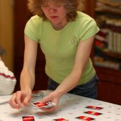
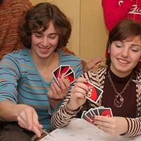
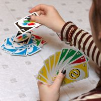
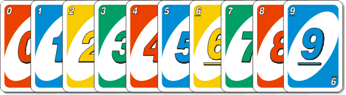
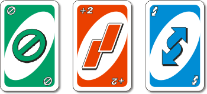
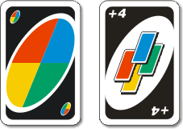

Rules of Uno
UNO game - easy to learn, fun to play!



Full detailed rules UNO game are supplied with UNO card batch. They contain the basic rules and the so-called "home ones", which can be used at will.
Fundamental rules:
Types of cards UNO
Rules of the UNO game
Active cards of the UNO
Official the rule UNO
Fines
Number of players: from 2 to 10.
Play time: from 20 min
Challenge: first discard your cards. On this, this round ends and the points are counted by the remaining cards on the hands.
Win. You can count the points in two ways - as you like.
The player, who first discards his cards, is charged the amount of points left on the hands of all other players. And so in every round. The winner is the one who, according to the results of several rounds, will score 500 points. This option encourages you to win the round, that is, the first to fold your cards.
Players are recorded points counted by the remaining cards on their hands (player who first throw off their cards gets zero points). And so on in every round. The loser is one who, according to the results of several rounds, will score 200 points, the remaining are winners. This option encourages you to quickly discard the most "expensive" cards.
There are 108 cards in the deck.

All digits (except 0) are in double quantity.
Active UNO cards: "Skip", "Take two", "Reverse".

The cost of each card is 20 points. Each picture is represented in 4 colours in double quantity.
Black active UNO cards: "Choose the colour", "Choose the colour and take four". The cost of each card is 50 points. By 4 cards of each kind.

Rules of the UNO
Dealing At the beginning of the game, each player is dealt by 7 cards (blindly). The remaining cards are put face down - this is the deck "Widdie". The top card from the deck "Widdie" is turned over, put next to and becomes the first card of the "Discard" deck.
Or the card should be the same colour.
Or the card must have the same digit, or the same picture (be active), or be a black active card.
In the absence of a suitable card, the player takes one card from the deck "Widdie" (blindly). If the card meets the above conditions - the player can put the card on the deck "Discard", if not satisfied - the player leaves the card himself, says "Pass" and the turn goes to the next player.
The game continues until one of the players discards all the cards. After that, the points by the remaining cards are counted (the value of the cards is shown in the section Types of cards, the winners are determined according to the results of several rounds - clause Win).
Active UNO cards
"Skip" - the next player misses his turn. The player can "save" from the action of this card only by laying out exactly the same card (the same colour, the same picture), that is, by performing the Intervention.
"Take two" - the next player takes two cards from the "Widdie" deck (blindly) and skips his turn. The player can "save" from the action of this card by laying out his card "Take Two" (the colour can be any). The actions of the cards "Take Two" are not summed up, and the last player, on which the "chain" of laying out the "Take Two" cards, takes only two cards from the "Widdie" deck and skips his turn.
"Choose Colour" - allows you to change the player's current colour (for any, including the current colour). The next player must put any card of the specified colour. In order to lay out the card "Choose Colour" the player does not need any special conditions, unlike the next card "Choose Colour and take four"...
"Choose Colour and take four" - can only be laid out by the player in his turn and only if the player (player-1) lacks the current colour (the current number / active cards / black active card Choose Colour can and to be present is not important, the main thing is the absence of the current colour). Simultaneously with laying out this card you need to choose a colour (can be any, including the current colour). The next player (player-2) takes four cards (blindly) from the "Widdie" deck and skips the turn.
Player-2 can "save" from the action of this card only after laying out the "Take Two" card of the new ordered colour (then everything goes as usual with the standard "Take Two" card action).
Check for honesty. If player-2, whom action of "Choose Colour and take four" is directed, suspects that he is being deceived and player-1, who has laid out this card, actually has the current colour, he can ask to show cards of player-1. If the suspicions are justified, player-1 takes his card "Choose Colour and take four" back into his hand, takes four cards from the deck "Widdie" (blindly), skips the turn (in fact, the card "Choose Colour and take four"). If suspicions were in vain, player-2 takes four cards from the "Widdie" deck, and also two more cards for mistrust and skips the turn.
Rule of politeness. The game continues only after the player sorts out his new four cards and says "Ready."